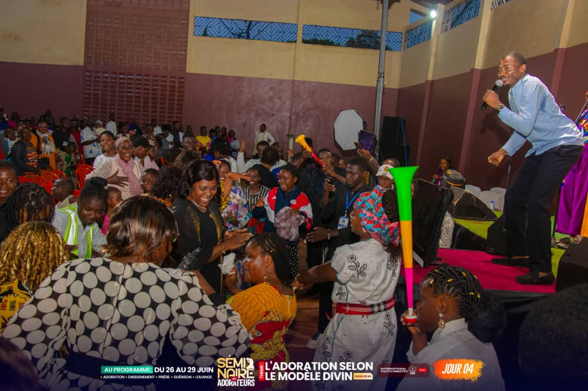
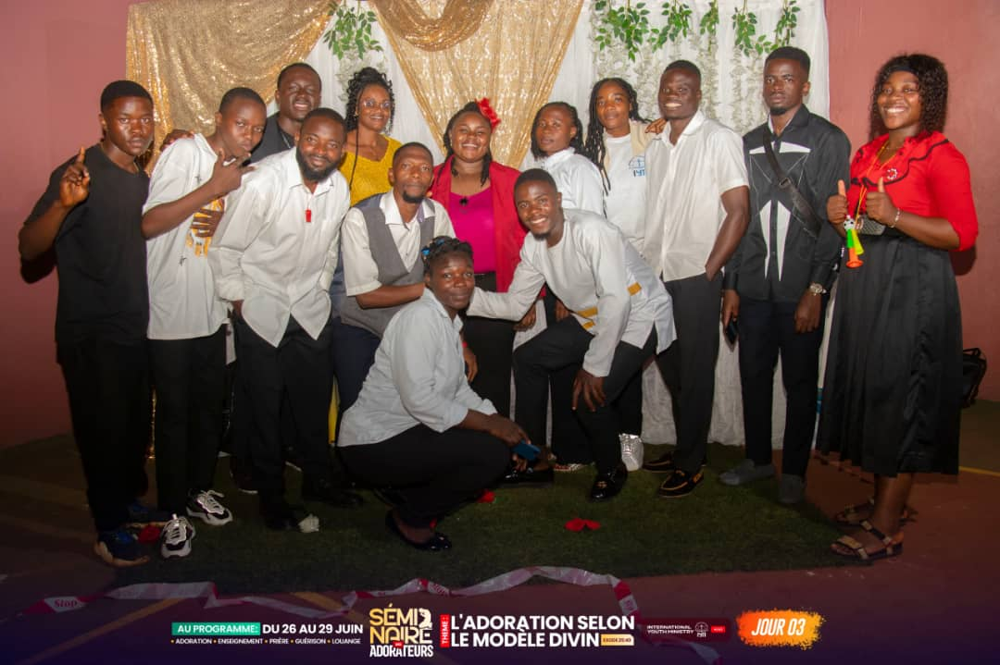
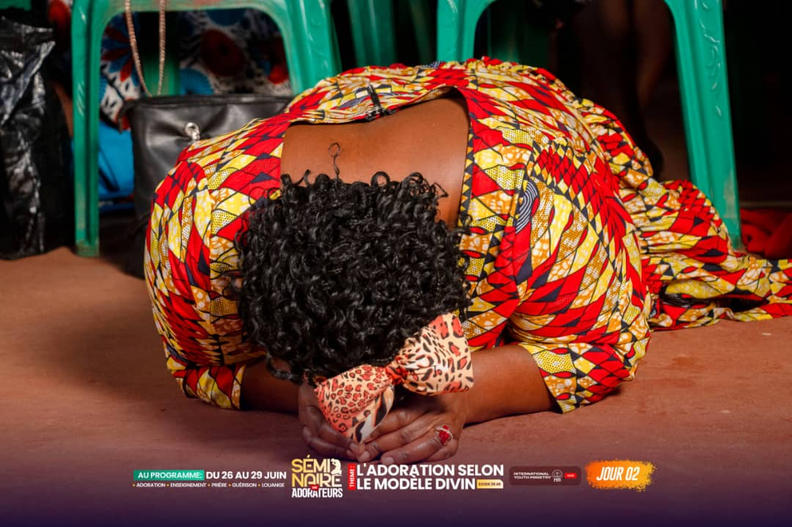
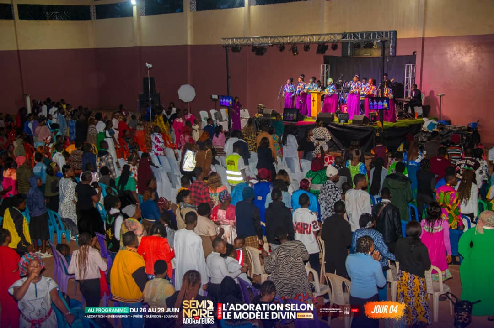

01 — Pilier
La Louange
Expression venant des sentiments que les actions de Dieu ont provoqués en nous et autour de nous.
En savoir plus →Jésus au centre de l'adoration
Un événement prophétique de Louange et d'Adoration pour le Cameroun Nouveau. Des jeunes de tout horizon, unis pour manifester l'adoration véritable.
Édition
2026
Lieu
Région Ouest
Thème
Que ton règne vienne

Terre de Louange
Région de l'Ouest, Cameroun
Notre Vision
Dans un contexte prophétique où le Cameroun est une nation de réveil pour les autres nations, la région de l'ouest quant à elle joue un rôle capital et indispensable.
« Terre de louange et d'Adoration, le Seigneur nous convie à prendre conscience, car c'est le temps de vivre et de manifester l'adoration véritable. »
C'est dans cette optique que nous, les jeunes venus de tout horizon, acceptons d'être utilisés par Dieu afin d'apporter notre pierre de construction pour le Cameroun Nouveau au travers de la Croisade de Louange et d'Adoration.
Nos Piliers
Trois dimensions indissociables au cœur de notre mission pour l'adoration véritable.

01 — Pilier
Expression venant des sentiments que les actions de Dieu ont provoqués en nous et autour de nous.
En savoir plus →
02 — Pilier
Une relation d'amour avec Dieu, dépassant ses œuvres pour se fixer sur sa personne.
En savoir plus →
03 — Pilier
L'Esprit de Dieu en mouvement dans la vie de la jeunesse pour la transformation des différentes sphères d'influence.
En savoir plus →Notre Mission
Nous croyons que Dieu a un plan prophétique pour le Cameroun. Notre croisade est un acte de foi collectif pour que la gloire de Dieu se manifeste depuis la Région de l'Ouest vers toutes les nations.
Rassembler les jeunes de toute part dans un esprit d'unité pour la louange et l'adoration.
Établir l'adoration véritable comme fondement du réveil national.
Susciter une armée d'adorateurs.
Construire ensemble le Cameroun Nouveau dans la louange et la prière.
+1000
Jeunes mobilisés à travers tout le Cameroun
10+
Villes touchées par la flamme de l'adoration
4
Jours de louange, d'adoration, de prière et de réveil.
En Chiffres
Participants attendus
Villes représentées
Jours de croisade
Inscriptions
Inscrivez-vous dès maintenant pour faire partie de cet événement prophétique. Venez apporter votre pierre à la construction du Cameroun Nouveau.
Accès gratuit à toutes les sessions
Soirée de louange et d'adoration
Sessions de prière prophétique
Communion fraternelle
Manifestation du réveil national
Remplissez ce formulaire pour confirmer votre participation.
Le temps est venu. Le Seigneur appelle la jeunesse du Cameroun à se lever, à louer, à adorer, et à construire ensemble le Cameroun Nouveau. Soyez au rendez-vous !